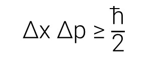

Já assistiu Breaking Bad? O nome "Heisenberg" vem de um dos autores de um dos princípios mais importantes da física quântica. Você age de forma diferente quando tá sendo observado(a)?
Bora discutir um pouco sobre.
O mundo subatômico se comporta de maneira diferente do mundo "extratômico".
Por exemplo: na mecânica clássica que a gente estuda no ensino médio, sabendo as condições iniciais de um corpo (tipo a massa, velocidade inicial e posição inicial), é possível deduzir com precisão a velocidade e a posição dele em certo tempo. Porém, no contexto da física quântica, as coisas são um pouco diferentes.
Quando se deseja observar o comportamento de um elétron, para descobrir sua velocidade e sua posição, por exemplo, é necessário incidir luz sobre ele, para observá-lo. Aí mora o problema. De forma rasa, o elétron possui uma massa muito pequena, e o simples fato de incidir luz sobre ele o perturba (acaba "empurrando" ele), e faz com que sua velocidade e sua posição sejam afetadas - é muito mais complexo que isso.
Assim, não é possível estudar o comportamento de certas partículas com precisão, apenas deduzir - estimando os efeitos da observação - seus comportamentos, calculando o quão perturbada a partícula foi pelo observador, e calculando a probabilidade de seus estados.

Essa equação da foto diz que produto da incerteza associada ao valor de uma coordenada x de uma partícula e a incerteza associada ao seu momento linear p é maior ou igual à constante reduzida de Planck. E enuncia grande parte da nossa discussão. A física quântica tem dessas, e é bem diferente da física clássica - que também já é bem doida.
O ato de medir afeta a grandeza medida. Inclusive no mundo "extratômico". Um termômetro afeta o sistema que se quer medir a temperatura. E assim vai. Você não age de forma diferente quando está sendo avaliado(a), observado(a), "medido"? Complicado.
O simples fato de observar a realidade afeta a realidade.
Assim, quando você enxerga o mundo, você acaba distorcendo o existente - com seus valores, princípios e ideias; assim como o instrumento de medição afeta o sistema a ser medido. Logo, sua visão de mundo diz mais sobre você do que o mundo em si, porque o que você vê é a realidade afetada pelos seus valores.
Como tá o seu "instrumento de medida"? Afetando muito o sistema? Ou é bem "imparcial"?